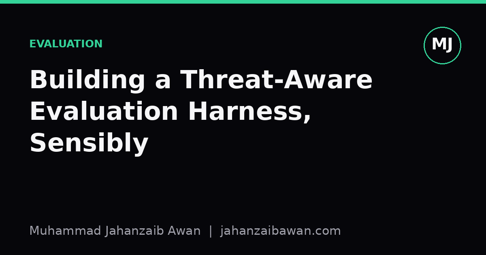

Building a Threat-Aware Evaluation Harness, Sensibly
Red-teaming has a lot of useful discipline buried under the marketing. Here is how to borrow the discipline for ordinary model evaluation without pretending every project is an adversarial war room.

Why ordinary evaluation misses the point
Most evaluation harnesses I have seen are built to answer one question: does the model do the thing it was trained to do, on data that looks like the data it was trained on. That is a reasonable first question, but it is not the question that matters once a model leaves the notebook. The question that matters in production is: what happens when the input stops looking like the training distribution, when someone pushes on the model deliberately, or when the environment around the model changes in a way nobody specified in the test set.
Red-teaming, in its original security sense, is the practice of adopting an adversarial stance towards your own system before someone else does it for you. The hype version of this, applied to machine learning, tends to involve dramatic language about jailbreaks and attacks. Strip the theatre away and what is left is a genuinely useful habit: before you ship, ask what could make this system fail in a way that matters, and go and check for it deliberately rather than hoping your standard test split will surface it by accident.
The reason this matters practically is that standard test splits are usually drawn from the same distribution and often the same time window as training data. They are excellent at measuring whether the model has learned the task. They are poor at measuring whether the model has learned the task robustly, because near-duplicate examples, shared preprocessing artefacts, and similar label distributions all leak comfort into the number you report. A threat-aware harness does not replace the standard test set; it sits alongside it and asks harder, more specific questions.
A worked example: the leakage you do not see
Suppose you are evaluating a text classifier that flags customer complaints as urgent or routine, trained on eighteen months of historical support tickets. A conventional random 80/20 split might give you 94 percent accuracy on the held-out 20 percent. That number looks solid, and it will survive a demo. But a random split draws test examples from the same months as training examples, so if there was a product recall in month eleven that generated a cluster of near-identical urgent tickets, some of those near-duplicates will sit in both train and test. The model is partly being tested on sentences it has effectively already seen.
A threat-aware version of this evaluation starts by asking what an adversary, or simply reality, might throw at the system later. The obvious first move is a temporal split: train on the first fifteen months, test on the last three. When I have seen teams do this on similar problems, accuracy often drops, sometimes to the high 80s, because the test period contains vocabulary, products, or complaint patterns that genuinely did not exist earlier. That gap between the random-split number and the temporal-split number is not noise; it is a direct estimate of how much the original 94 percent was borrowed from leakage rather than earned from generalisation.
The next move is to construct a small set of stress cases by hand: tickets with sarcasm, tickets that mix an urgent complaint with routine small talk, tickets translated awkwardly from another language, tickets that mention a competitor's product by mistake. These are not random samples from the distribution; they are deliberately chosen because they probe a specific failure mode. None of this requires exotic tooling. It requires sitting down, thinking like someone who wants the classifier to be wrong, and writing twenty or thirty examples that test exactly that.
What you get from this exercise is not a single headline metric but a small table: overall accuracy, temporal accuracy, accuracy on the hand-built stress set, and ideally accuracy broken down by ticket category. That table is more honest than the single number, because it tells you where the model is strong and where it is merely lucky.
Turning the habit into a repeatable harness
The value of red-team thinking only compounds if it is repeatable rather than a one-off exercise before a big demo. A threat-aware harness, practically, is a small library of test suites that sit on top of your usual evaluation pipeline. One suite handles distributional shift, built from a leakage-aware split by time or by source rather than by random shuffling. A second suite handles adversarial or edge-case inputs, built from examples a person specifically constructed to break the model, ideally refreshed every time the model is retrained, because what counted as an edge case last quarter may be routine next quarter. A third suite handles subgroup performance, checking that an aggregate accuracy figure is not hiding a much weaker result on a smaller but important slice of the data.
None of this needs to be elaborate. A version-controlled set of CSV files with expected labels, a script that runs the model against each suite and reports accuracy or error type per suite, and a short written note explaining why each suite exists, is enough to make the practice stick. The discipline is in maintaining it over time, adding new stress cases as new failure modes are discovered in production, and treating a regression on the stress suite as seriously as a regression on the main metric, not as an afterthought.
It is worth being honest about the limits here too. A hand-built stress suite of thirty examples cannot claim statistical coverage of all possible adversarial inputs, and it would be dishonest to present it as such. Its value is diagnostic rather than exhaustive: it tells you the model is at least robust to the specific failure modes you anticipated, and a failure on it is a strong, cheap early warning. It should never be mistaken for proof of general robustness.
The practical takeaway
You do not need a dedicated security team or a formal red-team programme to benefit from this way of thinking. What you need is the discipline to ask, before every evaluation, what kind of split and what kind of example would make this model's weaknesses visible rather than invisible, and then to build that into the harness as a permanent fixture rather than a one-time check. The single most useful habit is comparing a random split against a leakage-aware split, by time or by source, and treating any large gap between the two as the real signal, because that gap is usually where the hype in a headline accuracy number is hiding.